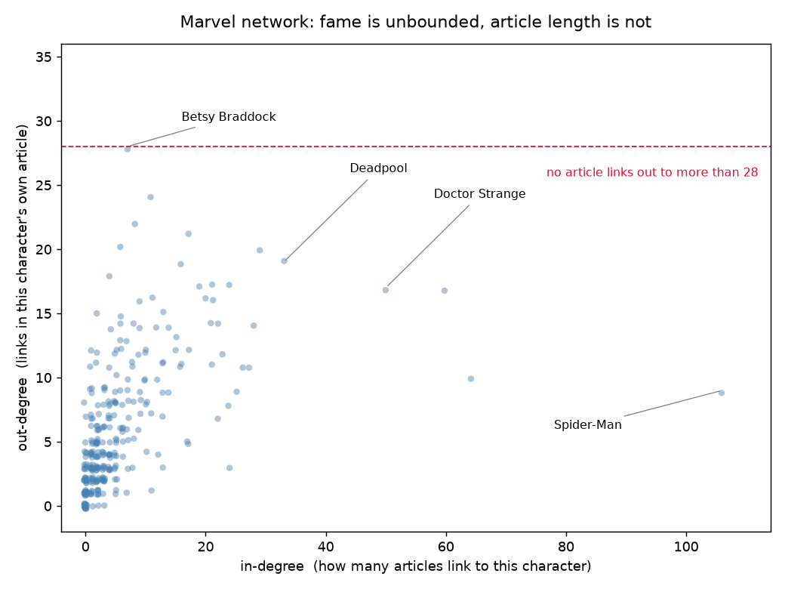

Rakel Zander Ebdrup & Jakob Kargo Mortensen · September 2026
Research question
In the Marvel Wikipedia network a character's in-degree (how many other
articles link to it) reaches 106, while its out-degree (how many links its
own article carries) never passes 28. Is that gap a real property of how Wikipedia is
written — or just an artefact of how this dataset was scraped? We use it as a way to
ask how the network was built, and then we check the answer against a fresh rebuild
from the live Wikipedia.
Method
Data. Week-1 frozen snapshot from the course data page: 303 character
nodes, 1 784 directed edges (article A links to article B). Loaded with every node
added first, so the 17 isolates survive.
Tools. NetworkX in- and out-degree over all 303 nodes; Spearman
correlation between them; the scatter below; degree distributions with logarithmic
binning.
Reproduction check. For the 15 highest out-degree characters we rebuilt
their out-links straight from Wikipedia's live HTML (action=parse, navboxes /
infoboxes / tables stripped, links kept only inside paragraphs and list items) and scored
them against the snapshot.
Reproduce. Notebooks week1_distribution.ipynb and
week1_wiki_api_compare.ipynb.
The figure

One point per character (jittered). The cloud drifts up and to the right — more
linked-to characters do have somewhat richer articles (Spearman ρ = 0.70)
— but out-degree runs into a hard ceiling at 28 (dashed line), while in-degree keeps
going. Spider-Man is linked to by 106 articles and links out to just 9.
Top characters by degree
#
In-degree
Out-degree
1
Spider-Man
106
Betsy Braddock
28
2
Hulk
64
Cloak and Dagger
24
3
Wolverine
60
Adam Warlock
22
4
Doctor Strange
50
Venom
21
5
Deadpool
33
She-Hulk
20
What we found
The two degrees are related, but out-degree saturates.
Spearman ρ = 0.70 — prominent characters tend to have longer,
more cross-linked articles. Yet no article links out to more than 28 others, and the
busiest hubs are nowhere near the top: Spider-Man (in 106) links out to 9,
Hulk (in 64) to 10.
Why the asymmetry. An out-link is written by one article's
editors and is bounded by how much prose that article has. An in-link is conferred by
everyone else — any of the other 302 articles can decide a character
matters — so in-degree has no ceiling and the well-known characters accumulate links
without limit (rich-get-richer; week 2 has a model of exactly this).
58 forgotten characters have in-degree 0: 17 are true isolates (no
links either way), and 41 are “sources” — their own article links out,
but nobody links back.
350 of the 1 784 directed edges are reciprocated. Collapsing to
undirected pairs removes exactly those duplicates
(1 784 − 350 = 1 434), giving a mean undirected degree
of 2m/n ≈ 9.5.
Does it reproduce?
The surprising part — the out-degree ceiling — could easily be a scraping choice
rather than a fact about Wikipedia. So we rebuilt the out-links of the 15 busiest characters
directly from the live encyclopedia:
We recovered 92.8 % of the snapshot's edges with
100 % precision — the “body text, no navigation
templates” rule invents no edges.
The highest reconstructed out-degree is still 28 (Betsy Braddock).
The ceiling survives an independent rebuild — it is in the encyclopedia,
not in the scraper.
The few edges we miss are in-prose character tables (e.g. Phoenix Force's list
of hosts), which our HTML filter strips. They would nudge a handful of out-degrees up by
one or two — not lift the cap.
The category itself has drifted from 303 to 380 pages since the
2026-08-26 freeze (3 removed, 80 added), so the snapshot is a curated slice, not
“Wikipedia today” — a good reason for every group to work from the same
frozen file.
Conclusion
In-degree and out-degree measure two different things. In-degree is collective
editorial attention: unbounded, heavy-tailed, hub-forming. Out-degree is one
article's own scope: bounded by how much its editors wrote, capped near 28. The
positive correlation just says popular characters also get longer articles — it does
not close the gap. And the reproduction check says this is a structural fact about how
Wikipedia is written, not a quirk of our data file.